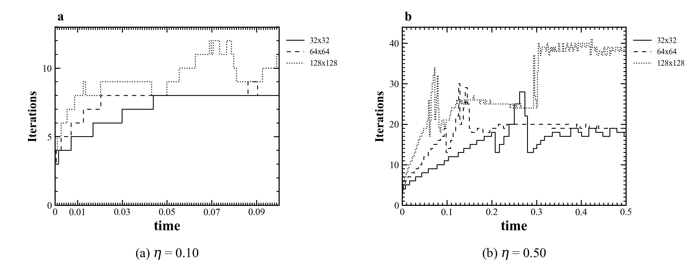
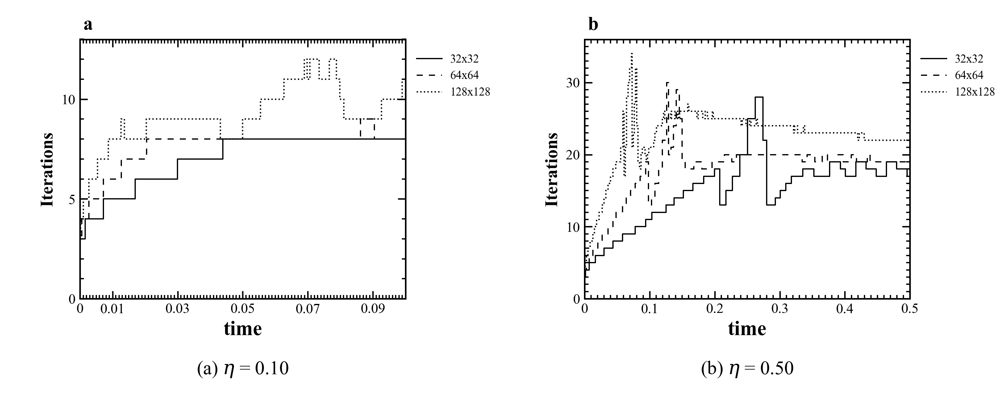

Paper Figure 8
Paper Figure 8 is referenced from the original article; the public repository keeps only locally generated reproduction plots.
Final M3 + Picard comparison. Baseline is the original checkpoint branch; paper-aligned uses Jacobi 5/5 and eta guard 1.1.
Left: reference to paper Figure 8. Right: final paper-aligned result, drawn with the same eta-panel and grid-line-style convention.

Left: reference to paper Figure 9. Right: final paper-aligned result. The spike is reduced relative to baseline, but the average nonlinear count is still higher than the paper.
